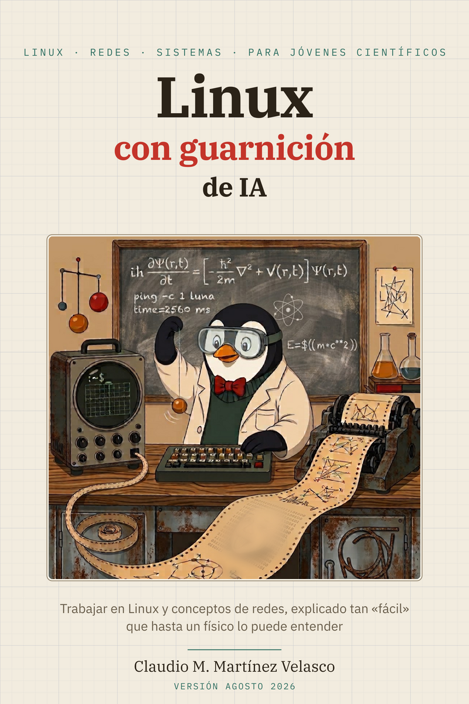

Linux con guarnición de IA
Trabajar en Linux y conceptos de redes, explicado tan «fácil» que hasta un físico lo puede entender
Bienvenida

Llevas años usando Linux sin haber hablado nunca con él directamente. Este curso es esa conversación: trece sesiones para pasar de usuario de escritorio a alguien que instala su sistema, entiende su red y trabaja con soltura en un servidor remoto.
Por qué tú. No eres un usuario normal de un ordenador: eres un científico, y no puedes conformarte con el manejo básico — tener una herramienta tan potente y no saber usarla es un desperdicio. Pero tampoco eres informático, ni tienes tiempo de dominar un sistema operativo: eso lleva años. Así que hay que ponerse en medio, y ese punto medio es este libro: con él aventajas, y con mucho, al común de los mortales; a partir de ahí decides tú cuánto más quieres aprender. Dedicarle unos días es una muy buena inversión de tu tiempo.
Escrito para estudiantes de ciencias e ingeniería — física, matemáticas, química, cualquier ingeniería — con los ejemplos tomados de la física: los ejercicios usan datos de laboratorio, las analogías vienen de la mecánica, y el destino final es el flujo de trabajo real del cálculo científico.
Regla única e innegociable: no copies y pegues los comandos. Tecléalos. Los dedos aprenden lo que los ojos solo reconocen.
Cómo leer este curso: lo básico, lo avanzado y la IA
Cada capítulo distingue dos niveles, y conviene tenerlos claros desde el principio. Lo básico es lo que un físico usa de verdad en su día a día y debe salir con soltura: moverse por el sistema, instalar Linux en un PC, entender particiones, sistemas de ficheros y formateo, mover información entre Linux, Windows, la nube y otros ordenadores, leer su red de casa — direcciones, DHCP, router, NAT y cortafuegos — y entrar en otra máquina. Lo avanzado — claves SSH, rsync, sesiones que sobreviven a la desconexión, túneles — hay que conocerlo, no dominarlo: saber que existe, para qué sirve y qué puede romper. La razón es de 2026: esas tareas las harás con una IA al lado que te dé las instrucciones, y solo quien conoce las herramientas mantiene el control de lo que la IA le propone. El anexo A — cómo instalar un agente de IA en tu terminal y cómo seguir mandando tú — es, en ese sentido, la otra mitad de este curso. Los ejercicios llevan siempre el nivel marcado: los esenciales no se saltan; los avanzados se leen, y se hacen si apetece.
Qué necesitas para empezar
Lo que suponemos que ya sabes — y para quién es «fácil». El subtítulo lleva la palabra entre comillas a propósito. Este curso está pensado para un perfil concreto: estudiante de ciencias, matemáticas o ingeniería que ha cursado y aprobado la asignatura de programación que suele haber en primero de grado, y preferiblemente que esté en segundo curso o lo haya pasado. Para ese perfil, el curso es fácil: manejas un ordenador con soltura por la vía gráfica — ventanas, carpetas, navegador, instalar un programa — y no te asusta una variable ni un bucle. No hace falta haber abierto una terminal en tu vida: ese es justo el punto de partida. Con menos formación se puede seguir, pero te costará más y algunas partes te parecerán complicadas; el curso no lo esconde.
Lo que necesitas tener instalado. Un Linux de escritorio funcionando. El curso está escrito y probado sobre Linux Mint, y cualquier pariente cercano — Ubuntu y sus derivados, Debian con escritorio — sirve exactamente igual: los comandos son los mismos y solo cambiará algún detalle cosmético de los menús. Vale cualquier ordenador de la última década y una conexión a internet para descargar los materiales.
¿Que tu máquina tiene Windows o macOS? El apéndice Vengo de Windows te prepara un Linux dentro de tu sistema, con dos caminos según lo que quieras cubrir.
Algunos bloques pedirán algo más, y se avisará al llegar: unos 8 GB de RAM y 25 GB libres para la máquina virtual del bloque C (virtualización e instalación; el software, KVM y virt-manager, viene en los repositorios de tu Linux) y acceso al router de tu casa en el bloque D (redes) — nada que comprar, nada que arriesgar.
© 2026 Claudio M. Martínez Velasco. Versión: agosto 2026. El texto de este curso se publica bajo licencia Creative Commons Atribución–CompartirIgual 4.0 (CC BY-SA 4.0). Las fotografías conservan las licencias indicadas en su pie de figura.